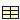

The package Wavelet is a function library developed for Modelica to carry out wavelet transform and related calculations. It is used for the post processing of the simulation results or other data. Online operation, meaning execution of the functions during the simulation process, is not possible.
The numerical calculation of wavelet transform requires that the data be sampled in equidistant time grids. If non-equidistant time grids are used, the data should be firstly converted to equidistant using function interpL in this library. If the data are to be generated by Dymola with model simulation, it is suggested that Equidistant time grid should be checked in the Simulation window through the menu Simulation/Setup.../Output/Output selection.
Most functions in this library do not check the input parameters. It is the task of the user to provide valid parameters. Upon wrong input parameters, unexpected errors might occur.
This library is developed and tested with the demo version of Dymola 2013.
Detailed information is to be found in each package.
| Package | Description |
| Examples | Some examples showing some functionalities of this library |
| MRA | Wavelet application for multi-resolution analysis (MRA) |
| Denoising | Wavelet application for denoising |
| Transform | Wavelet transform and tightly related functions |
| Families | Definition of wavelet families |
| General | General purpose functions used in this library |
| Records | Definitions for supporting graphic user interface |
| Types | Definitions of enumeration values |
* Modelica_LinearSystems2: This library is used for displaying the curves.
* Plot3D: This is used for showing the images generated by wavelet continuous transform (CWT).
The library Plot3D is delivered with Dymola. In the Dymola demo version, the functionality of Plot3D
seems to be limited, such that the 3D surfaces can only be displayed in a 2D manner.
All files in this directory (Wavelet) and in all subdirectories, especially all files that build package "Wavelet" are released under the Modelica License 2.
Dr. Michael Gao, michael.gao@tum.de
Mr. Qipeng Hu, qipeng.hu@gmail.com
Mr. Weihua Wang
Mr. Hanko Ipach
| Name | Description |
|---|---|
| Examples | Some examples to use this Wavelet Library |
| MRA | Application: One-dimensional multi-resolution analysis |
| Denoising | Application: One dimensional signal denoising |
| Transform | Functions for wavelet transform |
| Families | Functions about wavelet families |
| General | General functions |
| Records | Records, mainly used for graphic user interface |
| Types | Definitions of enumeration values |
This section provides several examples. They serve as a starting point for the users to start their work with this library. Most examples can be accessed through a graphic interface for setting input parameters and displaying results.
To execute the examples that read simulation result data from MAT files, the two Modelica models (testSigna1 and testSignal2) have to be firstly run in Dymola, so that the MAT files are generated and stored in the hard disk.
| Name | Description |
|---|---|
| displayWavelet | Display the wavelet available in this Wavelet Library |
| cwtChirpCurve | CWT of a chirp signal with outputs shown in curves |
| cwtChirpImage | CWT of a chirp signal with outputs shown with curves and images |
| fileData_cwtn | CWT of the simulation result read from a MAT file |
| fileDataMRA | MRA of the simulation result read from a MAT file |
| fileDataDenoising | Denoising of the simulation result read from a MAT file |
| testSignal1 | Generates a test signal for analysis |
| testSignal2 | Generates a test signal for analysis |
This example displays the wavelet and scaling functions of a wavelet family in one diagram. For a wavelet that has no scaling function, only the wavelet function is displayed. For the complex wavelets, the real and imaginary parts are displayed with two curves. The user is able to select a wavelet by its name and set its parameters through a graphic interface.
Please refer to the description of wavelet families for the detailed information about the available wavelets in this library.
Because of the length of discrete Meyer wavelet, the display of it takes a long time.
| Type | Name | Default | Description |
|---|---|---|---|
| wavletDefinition | wp | Parameters for generating wavelet and scaling functions. See wavFunc() for detailed description of the parameters. |
This function carries out continuous wavelet transform of a chirp signal with graphic user interface. The data to be analyzed are given as default input values in the function. Bothe the original data and the transform result are shown with curves.
Since simple default values are provided with this function, a direct execution of this function without any extra input parameters will deliver a complete MRA analysis for an example.
Refer to the description of Families for detailed information about the available wavelets.
| Type | Name | Default | Description |
|---|---|---|---|
| Real | signal[:] | {1.0000,1.0000,0.9999,0.9996... | Vector, the signal to be analyzed |
| Real | scales[:] | {2,8,32} | Scales |
| wavletDefinition | wIn | Input parameters for wavelet filters and functions |
This function carries out continuous wavelet transform of a chirp signal with graphic user interface. The data to be analyzed are given as default input values in the function. The original data are shown with a curve. The transform result will be shown in an image with pseudo-color. For showing this image, the 'Plot3D' library has to be available.
Since simple default values are provided with this function, a direct execution of this function without any extra input parameters will deliver a complete MRA analysis for an example.
Refer to the description of Families for detailed information about the available wavelets.
| Type | Name | Default | Description |
|---|---|---|---|
| Real | signal[:] | {1.0000,1.0000,0.9999,0.9996... | Vector, the signal to be analyzed |
| Real | scales[:] | {i for i in 1:16} | Scales |
| wavletDefinition | wIn | Input parameters for wavelet filters and functions |
This function carries out continuous wavelet transform with graphic user interface. The data to be analyzed are to be read from the *.MAT data file that is generated by Dymola. The original data are shown in a curve. The transform result is shown in an image with pseudo-color. For showing this image, the 'Plot3D' library has to be available.
Since simple default values are provided with this function, a direct execution of this function without any extra input parameters will deliver a complete MRA analysis for an example. Due to large computational amount, this example will take some time (usually below 30 seconds) to show the transform results.
Refer to the description of Families for detailed information about the available wavelets.
| Type | Name | Default | Description |
|---|---|---|---|
| Input data | |||
| String | fileName | "testSignal2.mat" | The MAT file containing the signal to be analyzed |
| String | signalName | "y" | The signal name to be analyzed |
| Real | t0 | 0.0 | Start time of the signal to be analyzed |
| Real | t1 | 1.0 | End time of the signal to be analyzed |
| Real | fs | 500.0 | Sampling frequency of the signal for analysis. This is used to generate an equidistant time grid with the expected time step. If fs == 0, the simulation time grid will be used, even if it is none-equidistant. Since wavelet analysis has to be done in equidistant time grid, non-equidistant time grids usually cause incorrect results. |
| Real | scales[:] | {i for i in 1:4:64} | Scales |
| wavletDefinition | wIn | Input parameters for wavelet filters and functions | |
This function carries out the complete wavelet MRA with graphic user interface. The data to be analyzed are to be read from the *.MAT data file that is generated by Dymola. Please note that only the wavelets of types 1, 2 and 3 are possible for MRA. Otherwise running errors will occur. The results are displayed with multiple curves. It is possible to show either the wavelet coefficients at different levels or the signals that are reconstructed with the coefficients of different single levels.
Since simple default values are provided with this function, a direct execution of this function without any extra input parameters will deliver a complete MRA analysis for an example.
Refer to the description of Families for detailed information about the available wavelets.
| Type | Name | Default | Description |
|---|---|---|---|
| Input data | |||
| String | fileName | "testSignal2.mat" | The MAT file containing the signal to be analyzed |
| String | signalName | "y" | The signal name to be analyzed |
| Real | t0 | 0.0 | Start time of the signal to be analyzed |
| Real | t1 | 1.0 | End time of the signal to be analyzed |
| Real | fs | 200.0 | Sampling frequency of the signal for analysis. This is used to generate an equidistant time grid with the expected time step. If fs == 0, the simulation time grid will be used, even if it is none-equidistant. Since wavelet analysis has to be done in equidistant time grid, non-equidistant time grids usually cause incorrect results. |
| wavletDefinition | wd | Wavelet definition. Note: Only (bi)orthogonal wavelets can be used for MRA. Valid parameters are wavID (<=7), Nd, Nr and range (dMeyer) | |
| mraParameters | mp | Parameters for MRA | |
This function carries out denoising operation to the one-dimensional data read from a specified *.MAT file, which is a simulation database generated by Dymola. The original data, the decomposed data in different levels, the denoised data in all levels and the denoised data are displayed with diagrams. In addition, the noise that is removed from the signal is displayed in a diagram, too.
The default input values provide an example to show the functionality of this function.
Refer to the description of Families for detailed information about the available wavelets.
| Type | Name | Default | Description |
|---|---|---|---|
| Input data | |||
| String | fileName | "testSignal2.mat" | The MAT file containing the signal to be analyzed |
| String | signalName | "y" | The signal name to be analyzed |
| Real | t0 | 0.0 | Start time of the signal to be analyzed |
| Real | t1 | 1.0 | End time of the signal to be analyzed |
| Real | fs | 200.0 | Sampling frequency of the signal for analysis. This is used to generate an equidistant time grid with the expected time step. If fs == 0, the simulation time grid will be used, even if it is none-equidistant. Since wavelet analysis has to be done in equidistant time grid, non-equidistant time grids usually cause incorrect results. |
| wavletDefinition | wd | Wavelet definition. Note: Only (bi)orthogonal wavelets can be used for MRA. Valid parameters are wavID (<=7), Nd, Nr and range (dMeyer) | |
| denoisParameters | dp | Data and parameters for wavelet denoising | |
| Type | Name | Description |
|---|---|---|
| Real | y[:] | Denoised signal |
| Real | noise[:] | Noise removed from signal |
| Real | c[:] | Original wavelet coefficients of all levels, details see wavDec() |
| Real | cth[:] | Wavelet coefficients of all levels after applying thresholds |
| Integer | len[:] | Lengths of coefficients for each levels, details see wavDec() |
This simple model generates a sum of three sinusoidal signals with different frequencies and magnitudes.
After running this model in Dymola, all simulation data are saved in testSignal1.MAT file in the hard disk.
Extends from Modelica.Blocks.Interfaces.SignalSource (Base class for continuous signal source).
| Type | Name | Default | Description |
|---|---|---|---|
| Real | offset | 0 | Offset of output signal y |
| Time | startTime | 0 | Output y = offset for time < startTime [s] |
| Type | Name | Description |
|---|---|---|
| output RealOutput | y | Connector of Real output signal |
This simple model generates a sum of sinusoidal signals with different frequencies and magnitudes.
After running this model in Dymola, all simulation data are saved in testSignal2.MAT file in the hard disk.
Extends from Modelica.Blocks.Interfaces.SignalSource (Base class for continuous signal source).
| Type | Name | Default | Description |
|---|---|---|---|
| Real | offset | 0 | Offset of output signal y |
| Time | startTime | 0 | Output y = offset for time < startTime [s] |
| Type | Name | Description |
|---|---|---|
| output RealOutput | y | Connector of Real output signal |
The one dimensional wavelet Multi-Resolution-Analysis (MRA) toolbox is an application function group created on the wavelet transform base library. Wavelet MRA carries out an N-level wavelet decomposition to obtain the wavelet coefficients in N detail levels and one approximation level. The coefficients of every single level are then used to reconstruct the signal separately. The result is a series of signals, each of which represents a certain frequency range of the original signal. In this way, the original signal can be observed in different (N+1) resolutions.
This toolbox provides two main functions for MRA. Function mra carries out numerical calculation and outputs MRA results in a matrix. Function mraGUI provides a graphic user interface to directly display the analysis results. It provides a further possibility to show the wavelet coefficients in every singles levels.
Only orthogonal, biorthogonal and discrete Meyer wavelets are possible for MRA. Please refer to the description of wavelet families for the detailed information about the available wavelets in this library.
| Name | Description |
|---|---|
| mraGUI | Graphic user interface for multi-resolution analysis (MRA) |
| mra | Wavelet multi-resolution analysis (MRA)Graphic user interface for multi-resolution analysis (MRA) |
| tuneCoef | Tune the wavelet coefficients of all decomposition levels |
This function carries out the complete wavelet MRA with graphic user interface. Please note that only the wavelets of types 1, 2 and 3 are possible for MRA. Otherwise running errors will occur. The results are displayed with multiple curves. It is possible to show either the wavelet coefficients at different levels or the signals that are reconstructed with the coefficients of different single levels.
Since simple default values are provided with this function, a direct execution of this function without any extra input parameters will deliver a complete MRA analysis for an example.
Refer to the description of Families for detailed information about the available wavelets.
| Type | Name | Default | Description |
|---|---|---|---|
| Input data | |||
| Real | u[:] | {0.9594,3.6278,7.6766,8.3415... | Signal to be analyzed |
| wavletDefinition | wd | Wavelet definition. Note: Only (bi)orthogonal wavelets can be used for MRA. Valid parameters are wavID (<=7), Nd, Nr and range (dMeyer) | |
| mraParameters | mp | Parameters for MRA | |
This function carries out the complete wavelet MRA and outputs decomposed signals in all levels after coefficient tuning. Please note that only the wavelets of types 1 (orthogonal), 2 (bi-orthogonal) and 3 (discrete Meyer) are possible for MRA. Otherwise running errors will occur.
Since default values are provided with this function, a direct execution of this function without extra input parameters will deliver a simple example.
Refer to the description of Families for detailed information about the available wavelets.
| Type | Name | Default | Description |
|---|---|---|---|
| Input data | |||
| Real | u[:] | {0.9594,3.6278,7.6766,8.3415... | Signal to be analyzed |
| wavletDefinition | wd | Wavelet definition. Note: Only (bi)orthogonal wavelets can be used for MRA. Valid parameters are wavID (<=7), Nd, Nr and range (dMeyer) | |
| mraParameters | mp | Parameters for MRA | |
| Type | Name | Description |
|---|---|---|
| Real | y[:, :] | Reconstructed signals with tuned coefficients in all levels. y[1,:] -- reconstructed signal, y[2,:] -- 1st detail level, y[3,:] -- 2nd detail level, ..., y[N+1,:] -- N-th detail level, y[N+2,:] -- approximation level, where N is the number of the decomposition levels. |
This function supports wavelet MRA. After wavelet (multi-level) decomposition, the coefficients are usually tuned in order to change the signal magnitude at different levels. This function is able to freely change the magnitude of the coefficients at each level by multiplying them with a given factor, which could be any real value.
The definition of c[:] and len[:] are the same as in the function wavDec().
| Type | Name | Default | Description |
|---|---|---|---|
| Real | c0[:] | {-0.707,-0.707,-0.707,-0.706... | Original wavelet coefficients of all levels |
| Integer | len[:] | {13,7,4,2,2} | Lengths of wavelet coefficients for each levels |
| Real | ratio[:] | {1,0.1,2,-1} | {rD1, rD2, ..., rDN, rAN}, tuning factors of all levels. |
| Type | Name | Description |
|---|---|---|
| Real | c1[size(c0, 1)] | Tuned wavelet coefficients of all levels |
The wavelet denoising toolbox is an application function group created on the wavelet transform base library. Wavelet denoising is based on the consideration that the noise energy in the data is significantly lower than the signal energy, or the part of the data that contains useful information. In this case, the noise is mainly represented with the wavelet coefficients that have small magnitudes. If these coefficients are removed (set to be zeros) and the signal is reconstructed, the noise will be eliminated from the original data. Therefore, wavelet denoising is only suitable for the cases where the signal-to-noise ratio is high.
The thresholds to decide which coefficients are to be removed are usually empirically determined based on the data to be analyzed. However, there are methods (the function thSelect) to automatically select the thresholds by analyzing the input data if the noise has normal distribution property. It has to be noted that the thresholds calculated by thSelect in this toolbox are valid only if the noise has normal (Gaussian) distribution with zero mean and standard deviation of one! Otherwise, the data have to be pre-conditioned or the thresholds have to be manually selected by the user.
The same data processing for denoising could also be used for data compression. The idea is based on such consideration: The wavelet coefficients with small magnitudes contain little information about the original signal. By removing these coefficients, the data amount can be greatly reduced while not much information is lost. If a suitable wavelet is used, most coefficients might have very small magnitudes. Thus, a large compression ratio can be achieved.
Only orthogonal, biorthogonal or discrete Meyer wavelets can be used for wavelet denoising.
| Name | Description |
|---|---|
| denoisGUI | Graphic user interface for 1D wavelet denoising |
| denois | 1D wavelet denoising |
| thSelect | Calculates threshold value for denoising |
| thApply | Apply soft or hard thresholding |
This function is a modified version of the function denois. It provides graphic user interface (GUI) for parameter input and displaying denoising results. Instead of filter banks, the wavelet is specified with its name. The original data, the decomposed data in different levels, the denoised data in all levels and the denoised data are displayed with diagrams. In addition, the noise that is removed from the signal is displayed in a diagram, too.
The default input values provide an example to show the functionality of this function.
| Type | Name | Default | Description |
|---|---|---|---|
| Input data | |||
| Real | u[:] | {-1.3853,1.5788,2.2041,3.982... | Signal to be analyzed |
| wavletDefinition | wd | Wavelet definition. Note: Only (bi)orthogonal wavelets can be used for MRA. Valid parameters are wavID (<=7), Nd, Nr and range (dMeyer) | |
| denoisParameters | dp | Data and parameters for wavelet denoising | |
| Type | Name | Description |
|---|---|---|
| Real | y[:] | Denoised signal |
| Real | noise[:] | Noise removed from signal |
| Real | c[:] | Original wavelet coefficients of all levels, details see wavDec() |
| Real | cth[:] | Wavelet coefficients of all levels after applying thresholds |
| Integer | len[:] | Lengths of coefficients for each levels, details see wavDec() |
This function carries out the wavelet denoising calculation for a data. The wavelet filter bank must be available for calling this function. This has to be obtained by wavelet filter functions.
It has to be noted that the thresholds calculated by thSelect in this toolbox are valid only if the noise has normal (Gaussian) distribution with zero mean and standard deviation of one! Otherwise, the data have to be pre-conditioned or the thresholds have to be manually selected by the user.
The manual selection of the thresholds has the possibility that the thresholds for the levels can be different. The thresholds are given in the input parameter, th[:], each element of which is used for one level. If a threshold for a level is less than zero, the default threshold automatically calculated by thSelect will be used.
| Type | Name | Default | Description |
|---|---|---|---|
| Real | u[:] | {-1.3853,1.5788,2.2041,3.982... | Data to be denoised |
| Integer | decLevel | 2 | Wavelet decomposition levels |
| Real | lod[:] | {0.7071067811865476,0.707106... | Wavelet low pass filter for decomposition |
| Real | hid[:] | {-0.7071067811865476,0.70710... | Wavelet high pass filter for decomposition |
| Real | lor[:] | {0.7071067811865476,0.707106... | Wavelet low pass filter for reconstruction |
| Real | hir[:] | {0.7071067811865476,-0.70710... | Wavelet high pass filter for reconstruction |
| Real | th[:] | {-1,-1} | Thresholds for all decomposition levels with th[1] for the first detail level (highest frequency components) |
| Boolean | sorh | true | Soft (false) or hard (true) thresholding for all decomposition levels |
| threshMethod | thMethod | 1 | Method for automatic threshold calculation |
| Type | Name | Description |
|---|---|---|
| Real | y[:] | Denoised data |
| Real | noise[:] | Noise removed from the data, = u-y |
| Real | c[:] | Wavelet coefficients before denoising |
| Real | cth[:] | Wavelet coefficients after denoising |
| Integer | len[:] | Length of wavelet coefficients of all levels |
This function analyzes the input data and calculates a common threshold for wavelet denoising for all detail levels using the specified methods. Four methods are available:
1. Fixed form: The threshold is calculated as sqrt(2*log(size(u,1))).
2. SURE: The threshold is calculated based on Stein's Unbiased Risk Estimate (SURE) of risk, which is a quadratic loss function.
3. Heuristic SURE: This is a heuristic version of the SURE method. It is actually a combination of the first two methods. For the signal with strong noises, the fixed form method is used. Otherwise, SURE method id used.
4. Minimal maximum: The threshold is estimated to realize the minimum of the maximum mean square error of the observed data. This method is derived from statistic theory.
It has to be noted that the thresholds calculated by thSelect in this toolbox are valid only if the noise has normal (Gaussian) distribution with zero mean and standard deviation of one! Otherwise, it is recommended that the data are to be pre-conditioned or the thresholds be manually selected.
| Type | Name | Default | Description |
|---|---|---|---|
| Real | u[:] | {-1.3853,1.5788,2.2041,3.982... | Signal vector |
| threshMethod | thID | 1 | Threshold calculation method |
| Type | Name | Description |
|---|---|---|
| Real | th | Threshold value |
| Type | Name | Default | Description |
|---|---|---|---|
| Real | u[:] | {0,1,2,3,4,5,6,7,8,9} | Input vector |
| Real | th | 5 | Threshold value |
| Boolean | sorh | true | Soft (false) or hard (true) thresholding |
| Type | Name | Description |
|---|---|---|
| Real | y[:] | Vector after thresholding |
This library includes the following one-dimensional wavelet transforms and inverse transforms:
1. Continuous wavelet transform: cwt() and cwtn();
2. Discrete wavelet transform: dwt();
3. Inverse discrete wavelet transform: idwt();
4. Multi-level wavelet decomposition: wavDec();
5. Multi-level wavelet reconstruction: wavRec();
6. Single level reconstruction based on multi-level wavelet coefficients: wavRec1();
| Name | Description |
|---|---|
| cwt | One-dimensional continuous wavelet transform with a given wavelet function |
| cwtn | One-dimensional continuous wavelet transform with a given wavelet name |
| dwt | One-dimensional discrete wavelet transform (one-level decomposition) |
| idwt | One-dimensional inverse discrete wavelet transform (one-level reconstruction) |
| wavDec | Wavelet multilevel decomposition |
| wavRec | Wavelet multilevel reconstruction |
| wavRec1 | Wavelet reconstruction using coefficients from a single level |
| wavCoef1 | Extract the wavelet coefficients of a single level |
One-dimensional CWT transforms a vector to a two dimensional image. The first dimension (horizontal axis) is the same as the original data. The second dimension (vertical axis) is the scale, similar to frequency. The scales are defined by the input parameter, scales. Larger scale values correspond to lower frequencies.
Refer to the section of wavelet Families for the detailed information about the available wavelets.
The default input values provide a quick example with a simple saw-tooth signal.
| Type | Name | Default | Description |
|---|---|---|---|
| Real | u[:] | {1.0000,1.0000,0.9999,0.9996... | Signal to be analyzed |
| Real | scales[:] | {1,4,16} | Scales to be transformed |
| Real | w[:] | {1,-1} | Wavelet function for the transform |
| Real | x_w[:] | {0,1} | Regular grid of the wavelet function |
| Type | Name | Description |
|---|---|---|
| Real | coefs[size(scales, 1), size(u, 1)] | A two dimensional matrix of wavelet coefficients. Each column corresponds to one element of the input parameter, scales. |
This function carries out one-dimensional CWT transform, same as the function, cwt(). The only difference is that cwtn() receives the wavelet name as input.
Refer to the section of wavelet Families for the detailed information about the available wavelets.
The default input values provide a quick example with a simple saw-tooth signal.
| Type | Name | Default | Description |
|---|---|---|---|
| Input data | |||
| Real | u[:] | {1.0000,1.0000,0.9999,0.9996... | Signal to be analyzed |
| Real | scales[:] | {1,4,16} | Scales for the transformation |
| wavletDefinition | wIn | Wavelet definition | |
| Type | Name | Description |
|---|---|---|
| Real | coefs[size(scales, 1), size(u, 1)] | A two dimensional matrix of wavelet coefficients. Each column corresponds to one element of the input parameter, scales. |
This function calculates discrete wavelet transform (one-level wavelet decomposition) of the input signal, u. Before transformation, the original signal is extended at both ends with zero padding. The length of the two result vectors is floor((size(u,1)+size(lod,1)-1)/2).
Refer to the section of wavelet Families for the detailed information about the available wavelets.
The default input values provide a quick example with a simple saw-tooth signal.
| Type | Name | Default | Description |
|---|---|---|---|
| Real | u[:] | {1,2,1,2,1,2,3,4,1} | Signal to be analyzed |
| Real | lod[:] | {0.707,0.707} | Low pass filter for decomposition |
| Real | hid[size(lod, 1)] | {-0.707,0.707} | High pass filter for decomposition |
| Type | Name | Description |
|---|---|---|
| Real | ca[:] | Approximation coefficients, size(ca,1) = ceil(size(u,1)/2) |
| Real | cd[size(ca, 1)] | Detail coefficients |
This function calculates inverse discrete wavelet transform (one-level wavelet reconstruction) using the input approximation and detail wavelet coefficients, ca and cd. The coefficient vectors are extended at both ends with zero padding before calculation. The length of the reconstructed data is usually (but not always) equal to the length of the original signal if the length is not specified.
Refer to the section of wavelet Families for the detailed information about the available wavelets.
The default input values provide a quick example to generate a simple saw-tooth signal.
| Type | Name | Default | Description |
|---|---|---|---|
| Real | ca[:] | {2.121,2.121,2.121,4.95,0.707} | Approximation coefficients |
| Real | cd[size(ca, 1)] | {-0.707,-0.707,-0.707,-0.707... | Detail coefficients |
| Real | lor[:] | {0.707,0.707} | Low pass filter for reconstruction |
| Real | hir[size(lor, 1)] | {0.707,-0.707} | High pass filter for reconstruction |
| Integer | ny | 0 | Length of the result, y (the central part will be extracted). If ny == 0, size(y,1) = 2*size(ca,1) - size(lor,1) +2 |
| Type | Name | Description |
|---|---|---|
| Real | y[:] | Reconstructed signal |
This function carries out multi-level wavelet decomposition.
Parameter, len, is a vector with (N+2) elements, where N is the number of levels. It contents the length information of the coefficients in all levels. len[1] is the length of the original signal vector; len[2] is the length of the detail coefficient vector of the first decomposition level; len[3] is the length of the detail coefficient vector of the second decomposition level; and so forth. Finally, len[N+2] contains the length of the approximation coefficient vector. Parameter, c, contains the wavelet coefficients of all levels, firstly the first detail level, then the second detail level and so on, and finally the approximation coefficients. This is described again in detail as follows:
| Data | Length | Location |
| Original signal | len[1] | u |
| First level detail coefficients | len[2] | c[1 : len[2]] |
| Second level detail coefficients | len[3] | c[len[2]+1 : len[2]+len[3]] |
| ... | ... | ... |
| k-th level detail coefficients | len[k+1] | c[sum(len[2:k])+1 : sum(len[2:k+1])] |
| ... | ... | ... |
| N-th level detail coefficients | len[N+1] | c[sum(len[2:N])+1 : sum(len[2:N+1])] |
| Approximation coefficients | len[N+2] | c[sum(len[2:N+1])+1 : sum(len[2:N+2])] |
Refer to the section of wavelet Families for the detailed information about the available wavelets.
The default input values provide a quick example with a simple saw-tooth signal.
| Type | Name | Default | Description |
|---|---|---|---|
| Real | u[:] | {1,2,1,2,1,2,3,4,1,2,3,4,1} | Signal to be analyzed |
| Integer | N | 3 | Decomposition level |
| Real | lod[:] | {0.707,0.707} | Low pass filter for decomposition |
| Real | hid[size(lod, 1)] | {-0.707,0.707} | High pass filter for decomposition |
| Type | Name | Description |
|---|---|---|
| Real | c[:] | Detail and approximation coefficients. For data structure see the information section |
| Integer | len[N + 2] | Lengths of the coefficient vectors of all levels. For data structure see the information section |
This function transforms the wavelet coefficients, which are obtained with multi-level wavelet decomposition, back to the original signal. The definitions of the input parameters, c and len, are same as the function wavDec().
Refer to the section of wavelet Families for the detailed information about the available wavelets.
The default input values provide a quick example to generate a simple saw-tooth signal.
| Type | Name | Default | Description |
|---|---|---|---|
| Real | c[:] | {-0.707,-0.707,-0.707,-0.706... | Detail and approximation coefficients. For data structure see the information section |
| Integer | len[:] | {13,7,4,2,2} | Coefficient vector lengths of all levels. For data structure see the information section |
| Real | lor[:] | {0.707,0.707} | Low pass filter for reconstruction |
| Real | hir[size(lor, 1)] | {0.707,-0.707} | High pass filter for reconstruction |
| Type | Name | Description |
|---|---|---|
| Real | u[:] | Reconstructed signal |
This function carries out a modified wavelet reconstruction: It reconstructs the signal with the wavelet coefficients from only one single level. All other coefficients are set zero. This operation is useful for some wavelet analysis, e.g. multi-resolution analysis and wavelet de-noising.
The definitions of input parameters, c and len, are same as the function wavDec().
Refer to the section of wavelet Families for the detailed information about the available wavelets.
The default input values provide a quick example.
| Type | Name | Default | Description |
|---|---|---|---|
| Real | c[:] | {-0.707,-0.707,-0.707,-0.706... | Wavelet coefficients of all levels |
| Integer | len[:] | {13,7,4,2,2} | Lengths of coefficients of all levels |
| Real | lor[:] | {0.707,0.707} | Low pass filter for reconstruction |
| Real | hir[size(lor, 1)] | {0.707,-0.707} | High pass filter for reconstruction |
| Integer | level | 2 | The level to be reconstructed. 1..N are for the detail levels, where N is the maximum decomposition level. 1 stands for the most detail level (highest frequency). N+1 is for the approximation level. |
| Type | Name | Description |
|---|---|---|
| Real | y[:] | Reconstructed signal |
This function extracts the coefficients of a specified decomposition level from the data structure of the wavelet coefficients. This operation is useful if only the coefficients of a specific level are interested.
The definitions of the input parameters, c and len, are same as the function wavDec().
Refer to the section of wavelet Families for the detailed information about the available wavelets.
The default input values provide a quick example.
| Type | Name | Default | Description |
|---|---|---|---|
| Real | c[:] | {-0.707,-0.707,-0.707,-0.706... | Wavelet coefficients of all levels |
| Integer | len[:] | {13,7,4,2,2} | Lengths of coefficient vectors for all levels |
| Integer | level | 2 | The level to be reconstructed. 1..N are for the detail levels, where N is the maximum decomposition level. 1 stands for the most detail level (highest frequency). N+1 is for the approximation level. |
| Type | Name | Description |
|---|---|---|
| Real | c1[:] | Extracted coefficients |
This section defines all available wavelets in this library. Since different wavelets have different properties, the functions for different wavelets require different input parameters and generate different output data. All available wavelets in this library with the parameters are listed in the following table.
Parameter, Nd, specifies the wavelet order. Nr is only used for biorthogonal wavelets, where Nd is for decomposition and Nr for reconstruction.
For the wavelets with theoretically unlimited support, e.g. Meyer, Gaussian, etc., the function range is set as effective support, [-es, es], if 'range' is not specified (==0).
Parameters, fb and fc, are used for some complex wavelets. These are the so-called frequency parameters defining the oscillation properties of the wavelets.
'phi' stands for scaling function, and 'psi' for wavelet function. A biorthogonal wavelet has two scaling and wavelet functions. The first function set is for forward transformation (decomposition); the second set is for inverse transformation (reconstruction).
Symbol, O, means the corresponding parameter is applicable, - not applicable, for a specific wavelet.
For generating Meyer wavelets, an external C-function saved in fft_c.c file has to be called. This C-file has to be available in the current working directory or the searching path of Modelica must include the directory of fft_c.c file.
| Wavelet | wavID | wavType | Nd | Nr | es | range | fb | fc | phi1 | psi1 | phi2 | psi2 |
| Haar | 1 | 1 | - | - | - | - | - | - | O | O | - | - |
| Daubechies | 2 | 1 | 1..20 | - | - | - | - | - | O | O | - | - |
| Symlets | 3 | 1 | 1..20 | - | - | - | - | - | O | O | - | - |
| Coiflets | 4 | 1 | 1..5 | - | - | - | - | - | O | O | - | - |
| Biorthogonal spline | 5 | 2 | 1..6 | 1..9 | - | - | - | - | O | O | O | O |
| Reverse biorthogonal spline | 6 | 2 | 1..9 | 1..6 | - | - | - | - | O | O | O | O |
| Discrete Meyer | 7 | 3 | - | - | 8 | >=0 | - | - | O | O | - | - |
| Meyer | 8 | 3 | - | - | 8 | >=0 | - | - | O | O | - | - |
| Gaussian | 9 | 4 | 1..8 | - | 5 | >=0 | - | - | - | O | - | - |
| Mexican hat | 10 | 4 | - | - | 5 | >=0 | - | - | - | O | - | - |
| Morlet | 11 | 4 | - | - | 4 | >=0 | - | - | - | O | - | - |
| Complex Gaussian | 12 | 5 | 1..8 | - | 5 | >=0 | - | - | - | O | - | - |
| Complex Morlet | 13 | 5 | - | - | 4 | >=0 | >0 | >0 | - | O | - | - |
| Complex Shannon | 14 | 5 | - | - | 20 | >=0 | >0 | >0 | - | O | - | - |
| Complex frequency B-spline | 15 | 5 | 1,2,... | - | 20 | >=0 | >0 | >0 | - | O | - | - |
For biorthogonal and reverse biorthogonal wavelets, only some combinations of the orders are available. For details, refer to the functions, wavBiorSpline and wavRevBiorSpline.
All wavelets are categorized into five types. They are defined as follows:
| Type | Description |
| 1 | Orthogonal wavelets |
| 2 | Biorthogonal wavelets |
| 3 | Non-(bi)orthogonal wavelets with scaling function |
| 4 | Non-(bi)orthogonal wavelets without scaling function |
| 5 | Complex wavelets (without scaling function) |
| Name | Description |
|---|---|
| wavFunc | Returns the filter bank and functions of a specific wavelet family |
| scalingWaveFunc | Generate the scaling and wavelet functions using wavelet filters |
| wavHaar | Haar wavelet filters |
| wavDaubechies | Daubechies wavelet filters |
| wavSymlets | Symlets wavelet filters |
| wavCoiflets | Coiflets wavelet filters |
| wavBiorSpline | Biorthogonal spline wavelet filters |
| wavRevBiorSpline | Reverse biorthogonal spline wavelet filters |
| wavDMeyer | Discrete Meyer wavelet filters |
| wavMeyer | Meyer wavelet function. The fft_c.c file must be accessible. |
| wavGaussian | Gaussian wavelet function |
| wavMexHat | Mexican hat wavelet function |
| wavMorlet | Morlet wavelet function |
| wavXGaussian | Complex Gaussian wavelet function |
| wavXMorlet | Complex Morlet wavelet function |
| wavXShannon | Complex Shannon wavelet function |
| wavXFreqBSpline | Complex Frequency B-Spline wavelet |
This function provides a common entry to access all available wavelets in this library. Since different wavelet families require different parameters and return different results, suitable input parameters must be provided. Not applicable parameters for a specific wavelet are omitted by the function.
Refer to Wavelet Families for detailed information about the available wavelets.
| Type | Name | Default | Description |
|---|---|---|---|
| wavletDefinition | wIn | Input parameters for wavelet filters and functions |
| Type | Name | Description |
|---|---|---|
| wavFuncOut | wOut | Output data of the function wavFunc() |
The total length of the functions is (size(lof,1)-1)*2^iteration+1. The function support (non-zero part) is (2^iteration -1)*nf-2^iteration+2, shorter than total length. One 'zero' is then added at the beginning and multiple 'zeros' are added at the end.
| Type | Name | Default | Description |
|---|---|---|---|
| wavletID | wavID | 1 | Id-Number of the wavelet. Necessary only for discrete Meyer wavelet |
| Real | lof[:] | {0.707,0.707} | Wavelet low pass filter |
| Real | hif[:] | {-0.707,0.707} | Wavelet high pass filter |
| Integer | iteration | 6 | Iteration of the calculations for generating the functions |
| Type | Name | Description |
|---|---|---|
| Real | x[:] | Equidistant grid of the functions |
| Real | phi[:] | The scaling function |
| Real | psi[:] | The wavelet function |
This function generate the Haar wavelet filter bank. No input parameters are required.
| Type | Name | Description |
|---|---|---|
| Real | F[:] | Scaling filter |
| Real | lod[:] | High pass filter for decomposition |
| Real | hid[:] | Low pass filter for decomposition |
| Real | lor[:] | High pass filter for reconstruction |
| Real | hir[:] | Low pass filter for reconstruction |
This function generate the Daubechies wavelet filter banks for the orders up to 10. If a wrong order number is given, an empty vector is returned.
| Type | Name | Default | Description |
|---|---|---|---|
| Integer | order | 2 | Order of the wavelet. order<=10 |
| Type | Name | Description |
|---|---|---|
| Real | F[:] | Scaling filter |
| Real | lod[:] | High pass filter for decomposition |
| Real | hid[:] | Low pass filter for decomposition |
| Real | lor[:] | High pass filter for reconstruction |
| Real | hir[:] | Low pass filter for reconstruction |
This function generate the Symlets wavelet filter banks for the orders up to 8. If a wrong order number is given, an empty vector is returned.
| Type | Name | Default | Description |
|---|---|---|---|
| Integer | order | 2 | Order of the wavelet. order<=8 |
| Type | Name | Description |
|---|---|---|
| Real | F[:] | Scaling filter |
| Real | lod[:] | High pass filter for decomposition |
| Real | hid[:] | Low pass filter for decomposition |
| Real | lor[:] | High pass filter for reconstruction |
| Real | hir[:] | Low pass filter for reconstruction |
This function generate the Coiflets wavelet filter banks for the orders up to 5. If a wrong order number is given, an empty vector is returned.
| Type | Name | Default | Description |
|---|---|---|---|
| Integer | order | 2 | Order of the wavelet. order<=5 |
| Type | Name | Description |
|---|---|---|
| Real | F[:] | Scaling filter |
| Real | lod[:] | High pass filter for decomposition |
| Real | hid[:] | Low pass filter for decomposition |
| Real | lor[:] | High pass filter for reconstruction |
| Real | hir[:] | Low pass filter for reconstruction |
This function generates the biorthogonal spline wavelet filters, where Nr is the order of the reconstruction filters, and Nd the order of the decomposition filters.
Usually, lodFd and hidFr are used for decomposition, and lorFr and hirFd are used for reconstruction.
| Nd | Nr |
| 1, 3, 5 | 1 |
| 2, 4, 6, 8 | 2 |
| 1, 3, 5, 7, 9 | 3 |
| 4 | 4 |
| 5 | 5 |
| 8 | 6 |
| Type | Name | Default | Description |
|---|---|---|---|
| Integer | Nd | 2 | Wavelet order for decomposition |
| Integer | Nr | 2 | Wavelet order for reconstruction |
| Type | Name | Description |
|---|---|---|
| Real | Fd[:] | Scaling filter for decomposition |
| Real | lodFd[:] | High pass filter for decomposition using filter Fd |
| Real | hidFd[:] | Low pass filter for decomposition using filter Fd |
| Real | lorFd[:] | High pass filter for reconstruction using filter Fd |
| Real | hirFd[:] | Low pass filter for reconstruction using filter Fd |
| Real | Fr[:] | Scaling filter for reconstruction |
| Real | lodFr[:] | High pass filter for decomposition using filter Fr |
| Real | hidFr[:] | Low pass filter for decomposition using filter Fr |
| Real | lorFr[:] | High pass filter for reconstruction using filter Fr |
| Real | hirFr[:] | Low pass filter for reconstruction using filter Fr |
This function generates the biorthogonal spline wavelet filters, where Nr is the order of the reconstruction filters, and Nd the order of the decomposition filters.
Usually, lodFd and hidFr are used for decomposition, and lorFr and hirFd are used for reconstruction.
| Nd | Nr |
| 1 | 1, 3, 5 |
| 2 | 2, 4, 6, 8 |
| 3 | 1, 3, 5, 7, 9 |
| 4 | 4 |
| 5 | 5 |
| 6 | 8 |
| Type | Name | Default | Description |
|---|---|---|---|
| Integer | Nd | 2 | Wavelet order for decomposition |
| Integer | Nr | 2 | Wavelet order for reconstruction |
| Type | Name | Description |
|---|---|---|
| Real | Fd[:] | Scaling filter for decomposition |
| Real | lodFd[:] | High pass filter for decomposition using filter Fd |
| Real | hidFd[:] | Low pass filter for decomposition using filter Fd |
| Real | lorFd[:] | High pass filter for reconstruction using filter Fd |
| Real | hirFd[:] | Low pass filter for reconstruction using filter Fd |
| Real | Fr[:] | Scaling filter for reconstruction |
| Real | lodFr[:] | High pass filter for decomposition using filter Fr |
| Real | hidFr[:] | Low pass filter for decomposition using filter Fr |
| Real | lorFr[:] | High pass filter for reconstruction using filter Fr |
| Real | hirFr[:] | Low pass filter for reconstruction using filter Fr |
This function returns the filter bank of discrete Meyer wavelet, which is an approximation of continuous Meyer wavelet. The filters with the length of 102 points usually provide sufficient accuracy. However, such long filters might cause long calculation time. Therefore, this function provides the possibility to return shorter filters. The trade-off is lower accuracy. Please note that some lengths will cause significantly large errors. The default length is 22.
| Type | Name | Default | Description |
|---|---|---|---|
| Integer | points | 22 | Filter length (<= 102). The complete length is used if this variable is <= 0 |
| Type | Name | Description |
|---|---|---|
| Real | F[:] | Scaling filter |
| Real | lod[:] | High pass filter for decomposition |
| Real | hid[:] | Low pass filter for decomposition |
| Real | lor[:] | High pass filter for reconstruction |
| Real | hir[:] | Low pass filter for reconstruction |
This function generates the continuous Meyer wavelet and scaling functions. Since Meyer wavelet has theoretically unlimited support, the function range has to be defined with [low, high].
For generating Meyer wavelets, an external C-function saved in fft_c.c file has to be called. This C-file has to be available in the current working directory or the searching path of Modelica must include the directory of fft_c.c file.
| Type | Name | Default | Description |
|---|---|---|---|
| Real | low | -8 | Lower boundary of the function |
| Real | high | 8 | Higher boundary of the function |
| Integer | points | 32 | Number of data points of the returned functions |
| Type | Name | Description |
|---|---|---|
| Real | x[points] | Regular grid |
| Real | phi[points] | Scaling function |
| Real | psi[points] | Wavelet function |
This function generates the continuous Gaussian wavelet function with the order up to 8. It has no scaling function. Since Gaussian wavelet has theoretically unlimited support, the function range has to be defined with [low, high].
| Type | Name | Default | Description |
|---|---|---|---|
| Real | low | -5 | Lower boundary of the function |
| Real | high | 5 | Higher boundary of the function |
| Integer | order | 1 | Order of the derivative, <=8 |
| Integer | points | 32 | Number of data points of the returned functions |
| Type | Name | Description |
|---|---|---|
| Real | x[points] | Regular grid |
| Real | psi[points] | Wavelet function |
This function generates the continuous Mexican Hat wavelet function. It has no scaling function. Since Mexican Hat wavelet has theoretically unlimited support, the function range has to be defined with [low, high].
| Type | Name | Default | Description |
|---|---|---|---|
| Real | low | -5 | Lower boundary of the returned function |
| Real | high | 5 | Higher boundary of the returned function |
| Integer | points | 32 | Number of the data points of the returned function |
| Type | Name | Description |
|---|---|---|
| Real | x[points] | Regular grid |
| Real | psi[points] | The wavelet function |
This function generates the continuous Morlet wavelet function. It has no scaling function. Since Morlet wavelet has theoretically unlimited support, the function range has to be defined with [low, high].
| Type | Name | Default | Description |
|---|---|---|---|
| Real | low | -4 | Lower boundary of the function |
| Real | high | 4 | Higher boundary of the function |
| Integer | points | 32 | Integer number, length of the returned functions |
| Type | Name | Description |
|---|---|---|
| Real | x[points] | Regular grid |
| Real | psi[points] | Wavelet function |
This function generates the complex Gaussian wavelet function with the order up to 8. It has no scaling function. Since complex Gaussian wavelet has theoretically unlimited support, the function range has to be defined with [low, high].
| Type | Name | Default | Description |
|---|---|---|---|
| Real | low | -5 | Lower boundary of the function |
| Real | high | 5 | Higher boundary of the function |
| Integer | order | 2 | Order of the derivative, <=8 |
| Integer | points | 32 | Number of data points of the returned functions |
| Type | Name | Description |
|---|---|---|
| Real | x[points] | Regular grid |
| Complex | psi[points] | Wavelet function |
This function generates the complex Morlet wavelet function. It has no scaling function. Since complex Morlet wavelet has theoretically unlimited support, the function range has to be defined with [low, high].
| Type | Name | Default | Description |
|---|---|---|---|
| Real | low | -4 | Lower boundary of the function |
| Real | high | 4 | Higher boundary of the function |
| Integer | points | 32 | Number of data points of the returned functions |
| Real | fb | 1 | Band width |
| Real | fc | 1 | Center frequency, e.g. 0.1, 0.5, 1, 1.5, ... |
| Type | Name | Description |
|---|---|---|
| Real | x[points] | Regular grid |
| Complex | psi[points] | Wavelet function |
This function generates the complex Shannon wavelet function. It has no scaling function. Since complex Shannon wavelet has theoretically unlimited support, the function range has to be defined with [low, high].
| Type | Name | Default | Description |
|---|---|---|---|
| Real | low | -20 | Lower boundary of the function |
| Real | high | 20 | Higher boundary of the function |
| Integer | points | 32 | Number of data points of the returned functions |
| Real | fb | 1 | Band width, e.g. 1, 2 |
| Real | fc | 1 | Center frequency, e.g. 0.1, 0.5, 1, 1.5, ... |
| Type | Name | Description |
|---|---|---|
| Real | x[points] | Regular grid |
| Complex | psi[points] | Wavelet function |
This function generates the complex Frequency B-Spline wavelet function. It has no scaling function. Since this wavelet has theoretically unlimited support, the function range has to be defined with [low, high].
| Type | Name | Default | Description |
|---|---|---|---|
| Real | low | -20 | Lower boundary of the wavelet function |
| Real | high | 20 | Higher boundary of the wavelet function |
| Integer | order | 2 | Wavelet order, a natural number, 1, 2, ... |
| Integer | points | 32 | Number of data points of the returned functions |
| Real | fb | 1 | Band width |
| Real | fc | 1 | Center frequency, a real number, e.g. 0.1, 0.5, 1, 1.5, ... |
| Type | Name | Description |
|---|---|---|
| Real | x[points] | Regular grid |
| Complex | psi[points] | Wavelet function |
This section defines some general functions, which are common utilities for wavelet transformation and other functions.
| Name | Description |
|---|---|
| _fft | An external function to carry out FFT |
| cumSum | Cumulative sum of a vector. Data type is Real. |
| cumSumInt | Cumulative sum of a vector. Data type is Integer |
| diff | Difference between every two adjacent elements of a vector |
| fft | Fast Fourier transform |
| fftShift | Shift zero-frequency component to center of spectrum |
| findIndex | Find the location of a value in a monotone vector |
| filterBank | Get the four wavelet filters based on a given scaling filter |
| ifft | Inverse fast Fourier transform |
| innerProduct | Inner product of two same length vectors |
| interpL | One-dimensional linear interpolation |
| midVector | Extract the middle part of a vector |
| nStdIfft | Inverse non-standard 1-D fast Fourier transform |
| quadReverse | Quadrature mirror of a given vector |
| sinc | Sinc function |
| upsample | Up-sampling of a vector (insert a zero after every element except the last one) |
| wavConv | Fully convolving of a data vector and a filter vector for wavelet transform |
| Type | Name | Default | Description |
|---|---|---|---|
| Integer | dir | 1 | Calculation direction: 1 - forward; -1 - backward |
| Integer | m | 3 | Data points = 2^m |
| Real | x[:] | {i for i in 1:8} | Real part of the data |
| Real | y[:] | {0,0,0,0,0,0,0,0} | Imaginary part of the data |
| Type | Name | Description |
|---|---|---|
| Real | x_out[:] | Real part of the result |
| Real | y_out[:] | Imaginary part of the result |
| Type | Name | Default | Description |
|---|---|---|---|
| Real | i_v[:] | {1,2,3,4} | Input vector |
| Type | Name | Description |
|---|---|---|
| Real | o_v[size(i_v, 1)] | Output vector |
| Type | Name | Default | Description |
|---|---|---|---|
| Integer | i_v[:] | {1,2,3,4} | Input vector |
| Type | Name | Description |
|---|---|---|
| Integer | o_v[size(i_v, 1)] | Output vector |
| Type | Name | Default | Description |
|---|---|---|---|
| Real | in_v[:] | {1,2,3,4} | Input vector |
| Type | Name | Description |
|---|---|---|
| Real | out_v[size(in_v, 1) - 1] | Output vector |
| Type | Name | Default | Description |
|---|---|---|---|
| Complex | x[:] | {Complex(re=1, im=0),Complex... | The vector to be transformed |
| Integer | n | 8 | Number of data points to be calculated |
| Type | Name | Description |
|---|---|---|
| Complex | y[size(x, 1)] | The result |
| Type | Name | Default | Description |
|---|---|---|---|
| Complex | x[:] | The vector to be shifted |
| Type | Name | Description |
|---|---|---|
| Complex | y[size(x, 1)] | The shifted vector |
This function searches the index of the input vector, u, according to x, so that:
If x is between u[k] and u[k+1], id1 = k and id2 = k+1.
If x is equal to u[k], id1 = id2 = k.
If x is smaller than all elements of u, id1 = id2 = 0.
If x is larger than all elements of u, id1 = id2 = size(u,1)+1.
The searching method is binary search, which has high efficiency for large searching spaces.
| Type | Name | Default | Description |
|---|---|---|---|
| Real | u[:] | {1,2,3,3,3,4,5,6,7,8} | A monotone vector, in which u[k+1] >= u[k] for all k |
| Real | x | 3 | The value to be located in u |
| Type | Name | Description |
|---|---|---|
| Integer | id1 | The largest index, id1, so that u[id1] <= x |
| Integer | id2 | The smallest index, id2, so that u[id2] >= x |
| Type | Name | Default | Description |
|---|---|---|---|
| Real | F[:] | {0.5,0.5} | The scaling filter |
| Type | Name | Description |
|---|---|---|
| Real | lod[:] | High pass filter for decomposition |
| Real | hid[:] | Low pass filter for decomposition |
| Real | lor[:] | High pass filter for reconstruction |
| Real | hir[:] | Low pass filter for reconstruction |
| Type | Name | Default | Description |
|---|---|---|---|
| Complex | x[:] | {Complex(re=36, im=0),Comple... | The vector to be inverse transformed |
| Integer | n | 8 | Number of data points for calculation |
| Type | Name | Description |
|---|---|---|
| Complex | y[size(x, 1)] | The result |
| Type | Name | Default | Description |
|---|---|---|---|
| Real | x1[:] | {1,2,3,4} | Vector 1 |
| Real | x2[size(x1, 1)] | {1,2,3,4} | Vector 2 |
| Type | Name | Description |
|---|---|---|
| Real | y | Result |
This function finds the values at u1 of the linearly interpolated function of the original data pairs, u and y. Both u and u1 must be monotone, meaning, e.g. u[k]>=u[k-1]. For the elements in u1 whose values are less than u[1], the corresponding elements in y1 are set as y[1]. For the elements in u1 whose values are greater than the last value of u, the corresponding elements in y1 are set as y[end].
| Type | Name | Default | Description |
|---|---|---|---|
| Real | u[:] | {1,2,3,4} | The variable of the original data |
| Real | y[size(u, 1)] | {0,1,-1,2} | The function of the original data |
| Real | u1[:] | {0,0.5,1,1.5,2,2.5,3,3.5,4,4... | The variable of the interpolated function |
| Type | Name | Description |
|---|---|---|
| Real | y1[size(u1, 1)] | The interpolated result at the variable values, u1[:] |
| Type | Name | Default | Description |
|---|---|---|---|
| Real | x[:] | {1,2,3,4,5,6} | Original vector |
| Integer | n | 3 | Number of the vector elements to be extracted |
| Type | Name | Description |
|---|---|---|
| Real | y[:] | The result vector |
| Type | Name | Default | Description |
|---|---|---|---|
| Complex | xhat[:] | The vector to be inverse transformed | |
| Real | low | -8 | Lower boundary of the function |
| Real | high | 8 | Higher boundary of the function |
| Type | Name | Description |
|---|---|---|
| Real | x[size(xhat, 1)] | The recovered signal |
| Real | t[size(xhat, 1)] | Time grid |
Changes the signs of the even index entries of the reversed input vector, x, if p is true. If p is false the same holds for odd index entries.
| Type | Name | Default | Description |
|---|---|---|---|
| Real | x[:] | {1,2,3,4,5,6,7,8} | Vector |
| Boolean | p | true | If p is true, the signs of the even index entries of the reversed input vector, x, is reversed. Otherwise, odd index entries are reversed. |
| Type | Name | Description |
|---|---|---|
| Real | y[size(x, 1)] | Quadrature mirrored elements of the input vector |
| Type | Name | Default | Description |
|---|---|---|---|
| Real | x | pi/2 |
| Type | Name | Description |
|---|---|---|
| Real | y |
| Type | Name | Default | Description |
|---|---|---|---|
| Real | u[:] | {1,2,3,4} | Input vector |
| Type | Name | Description |
|---|---|---|
| Real | y[size(u, 1)*2 - 1] | Output vector with the (double length of u) -1 |
| Type | Name | Default | Description |
|---|---|---|---|
| Real | u[:] | {1,2,3,4} | The data vector |
| Real | f[:] | {1,2} | The filter vector |
| Type | Name | Description |
|---|---|---|
| Real | y[size(u, 1) + size(f, 1) - 1] | The filtered data vector |
| Name | Description |
|---|---|
|  denoisParameters | Parameters for 1D wavelet denoising |
| mraParameters | Parameters for multi-resolution analysis (MRA) |
| wavFuncOut | Output data of function, wavFunc() |
| wavletDefinition | Wavelet definition |
Parameters for carrying out wavelet denoising.
Extends from Modelica.Icons.Record (Icon for records).
| Type | Name | Default | Description |
|---|---|---|---|
| Integer | decLevel | 2 | Decomposition levels, <=12 |
| threshMethod | thMethod | 1 | Select what method is to be used for calculating the threshold |
| Boolean | sorh | true | Soft (false) or hard (true) thresholding method |
| Thresholds (>=0) for all levels | |||
| Real | thD12 | -1 | Detail level 12 |
| Real | thD11 | -1 | Detail level 11 |
| Real | thD10 | -1 | Detail level 10 |
| Real | thD9 | -1 | Detail level 9 |
| Real | thD8 | -1 | Detail level 8 |
| Real | thD7 | -1 | Detail level 7 |
| Real | thD6 | -1 | Detail level 6 |
| Real | thD5 | -1 | Detail level 5 |
| Real | thD4 | -1 | Detail level 4 |
| Real | thD3 | -1 | Detail level 3 |
| Real | thD2 | -1 | Detail level 2 |
| Real | thD1 | -1 | Detail level 1 |
Parameters for carrying out wavelet multi-resolution analysis (MRA).
Extends from Modelica.Icons.Record (Icon for records).
| Type | Name | Default | Description |
|---|---|---|---|
| Wavelet | |||
| Integer | decLevel | 2 | Decomposition levels, <=12 |
| mraDisplay | mraData | 2 | Select what data type is to be displayed in the decomposed levels |
| Tuning factor of the coefficients before reconstruction. Levels higher than decLevel are omitted. | |||
| Real | rA | 1 | Approximating coefficients |
| Real | rD12 | 1 | Detail coefficients, level 12 |
| Real | rD11 | 1 | Detail coefficients, level 11 |
| Real | rD10 | 1 | Detail coefficients, level 10 |
| Real | rD9 | 1 | Detail coefficients, level 9 |
| Real | rD8 | 1 | Detail coefficients, level 8 |
| Real | rD7 | 1 | Detail coefficients, level 7 |
| Real | rD6 | 1 | Detail coefficients, level 6 |
| Real | rD5 | 1 | Detail coefficients, level 5 |
| Real | rD4 | 1 | Detail coefficients, level 4 |
| Real | rD3 | 1 | Detail coefficients, level 3 |
| Real | rD2 | 1 | Detail coefficients, level 2 |
| Real | rD1 | 1 | Detail coefficients, level 1 |
Output parameters of function wavFunc().
| Type | Name | Default | Description |
|---|---|---|---|
| Output | |||
| String | wavName | Wavelet name | |
| Integer | wavType | Wavelet type: 1. orthogonal wavelets; 2. biorthogonal wavelets; 3. wavelet with scaling function; 4. wavelet without scaling function; 5. complex wavelet without scaling function | |
| Real | F1[:] | Orthogonal wavelets: scaling filter; biorthogonal wavelets: scaling filter for decomposition | |
| Real | F2[:] | Only for biorthogonal wavelets: scaling filter for reconstruction | |
| Real | lod[:] | Low pass filter for decomposition | |
| Real | hid[:] | High pass filter for decomposition | |
| Real | lor[:] | Low pass filter for reconstruction | |
| Real | hir[:] | High pass filter for reconstruction | |
| Real | x[:] | Equidistance grid | |
| Real | phi1[:] | Scaling functions | |
| Real | psi1[:] | Wavelet functions | |
| Real | phi2[:] | Scaling functions, only applicable for biorthogonal wavelets | |
| Real | psi2[:] | Wavelet functions, only applicable for biorthogonal wavelets | |
Parameters for wavelet definition.
Refer to the section of wavelet Families for detailed information about the available wavelets.
Extends from Modelica.Icons.Record (Icon for records).
| Type | Name | Default | Description |
|---|---|---|---|
| Input | |||
| wavletID | wavID | 2 | ID number of the wavelet family to be displayed, 1..15. |
| Integer | Nd | 3 | Wavelet order |
| Integer | Nr | 3 | Wavelet order for reconstruction, only used for biorthogonal wavelets |
| Real | fb | 1.0 | Bandwidth frequency, only for complex wavelets |
| Real | fc | 1.0 | Center frequency, only for complex wavelets |
| Real | range | 5.0 | Boundary of the wavelet and scaling functions, [-range, range]. Valid for wavelets with theoretically unlimited support. Effective support is used as default value if range==0 |
| Integer | refinement | 6 | Refinement of the estimated wavelet and scaling functions. For orthogonal and biorthogonal wavelets, it stands for the iteration times to generating functions. The returned function length is (filter_length-1)*2^refinement+1. For other wavelets, the length of the returned functions is 2^refinement. |
Enumeration variables are defined here.
| waveletID | Wavelet name |
| 1 | Haar |
| 2 | Daubechies |
| 3 | Symlets |
| 4 | Coiflets |
| 5 | Biorthogonal spline |
| 6 | Reverse biorthogonal spline |
| 7 | Meyer |
| 8 | Discrete Meyer |
| 9 | Gaussian |
| 10 | Mexican hat |
| 11 | Morlet |
| 12 | Complex Gaussian |
| 13 | Complex Morlet |
| 14 | Complex Shannon |
| 15 | Complex frequency B-Spline |
| Value | Name | Description |
| 1 | coefficients | Wavelet coefficients |
| 2 | signal | Reconstructed signal |
| Value | Name | Description |
| 1 | fixedForm | Fixed form threshold. Threshold value = sqrt(2*ln(N)), with N being the length of the data to be denoised. |
| 2 | SURE | The threshold is calculated using the principle of Stein's Unbiased Risk Estimate(SURE). |
| 3 | heurSure | Heuristic SURE method. It is a combination of fixedForm and SURE methods. The noise level is firstly tested. For a high signal-to-noise ratio, SURE method is used, otherwise fixedForm method is used. |
| 4 | miniMax | The threshold is calculated according to the miniMax principle, which realizes the minimum of the maximum mean square error. |
| Name | Description |
|---|---|
| mraDisplay | Selection of display data for MRA: 1 - wavelet coefficients; 2 - reconstructed signal |
| threshMethod | Methods for calculating threshold for denoising: 1 - fixed form; 2 - SURE method; 3 - heuristic SURE; 4 - minimal maximum method |
| wavletID | Definition of wavelet identifiers: 1 - Haar; 2 - Daubechies; 3 - Symlets; 4 - Coiflets; 5 - Biorthogonal spline; 6 - Reverse biorthogonal spline; 7 - Meyer; 8 - Discrete Meyer; 9 - Gaussian; 10 - Mexican hat; 11 - Morlet; 12 - Complex Gaussian; 13 - Complex Morlet; 14 - Complex Shannon; 15 - Complex frequency B-Spline |